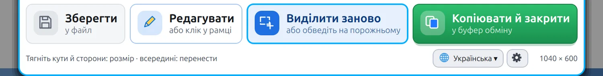
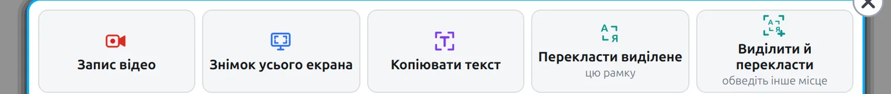
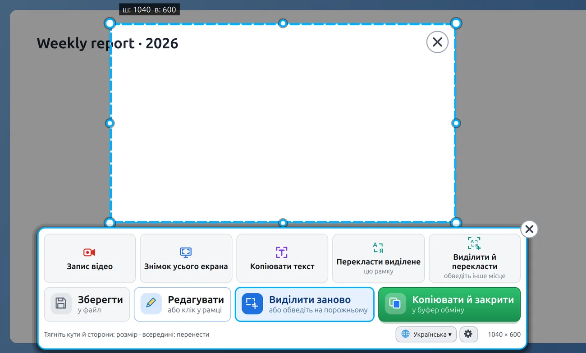
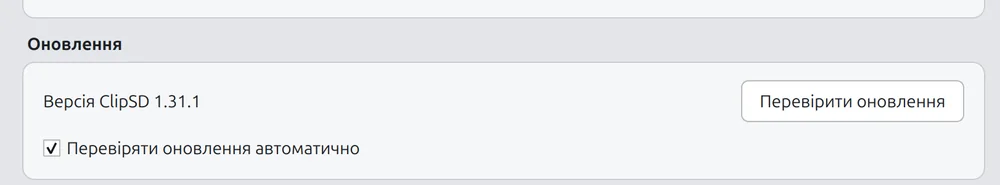
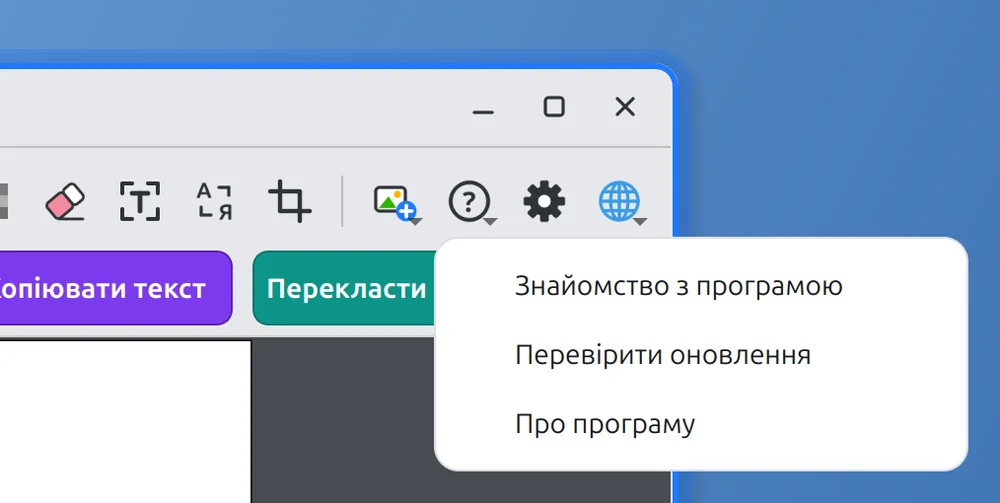
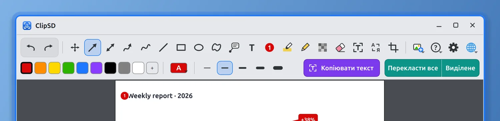
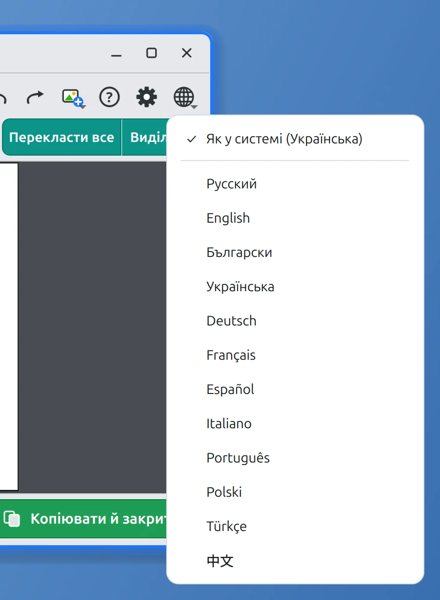
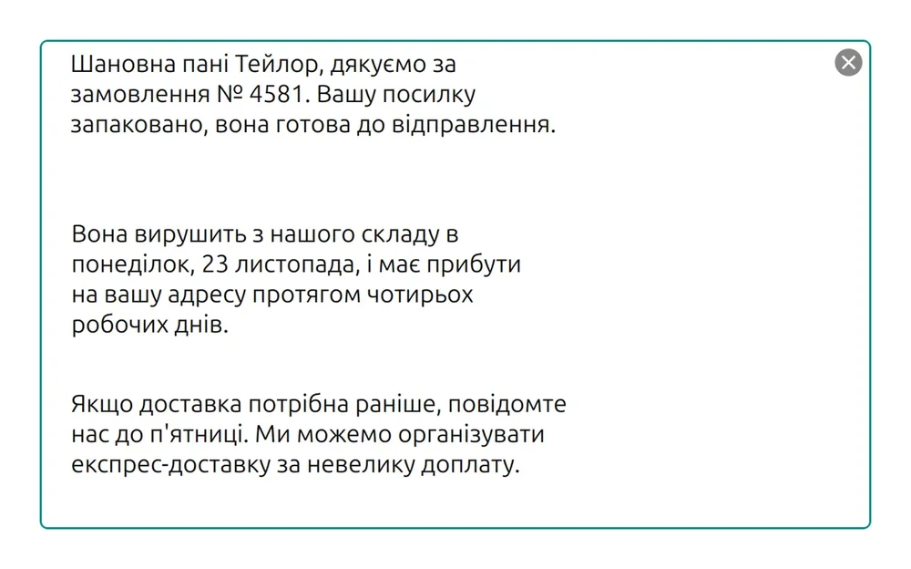
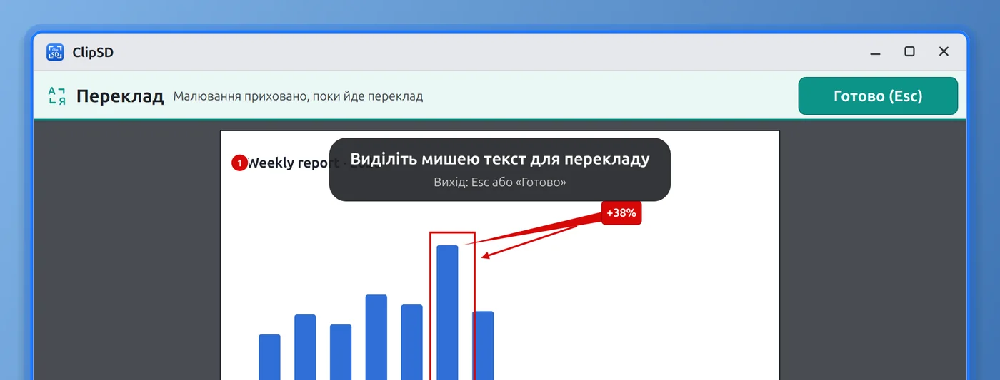

Історія версій
Нові версії першими з'являються в Telegram-каналі ClipSD (відкриється в новій вкладці).
Версія 1.32.1
вийшла
- Повтор у редакторі. Ctrl+Y знову повторює скасовану дію: у Windows це поєднання клавіш не спрацьовувало. Повторити можна і через Ctrl+Shift+Z.
- Оцініть ClipSD. Вікно після надсилання більше не зупиняється на «Надсилаємо оцінку…», коли оцінка вже дійшла. Якщо під час оцінювання натиснути Alt+W, набраний відгук не зникне: він повернеться, коли ви знову відкриєте вікно оцінки.
- Термінове оновлення. Якщо вікно «Термінове оновлення ClipSD» закрилося через знімок (Alt+W), воно з'явиться знову, коли ви закінчите зі знімком, а не через добу.
- Колір виділеного об'єкта. Колір і товщина виділеного об'єкта змінюються лише в нього. Під палітрою з'являється підказка: кнопка «Малювати далі цим кольором» залишає новий колір і для наступних ліній.
- Власні кольори. Кольори, вибрані через «+», запам'ятовуються зразками перед кнопкою «+». Зразків до трьох, права кнопка миші прибирає зразок.
- Маркер і олівець. Якщо почати лінію впритул до краю попередньої, малюється нова лінія, а попередня не зсувається.
Версія 1.32.0
вийшла
- Новий редактор. Інструменти зібрано в групи (стрілки й лінії, фігури, написи, малювання та інші). Кнопка «Усі інструменти» показує їх усі одразу разом із клавішами. Для вузького знімка вікно редактора теж вузьке: групи згортаються, а всі інструменти залишаються під рукою.
- Меню правої кнопки. Меню виділеного об'єкта більше не закриває його рамку й ручки: воно відкривається поруч з об'єктом.
- Дзвіночок сповіщень. У редакторі з'явився дзвіночок «Сповіщення»: нова версія з кнопкою «Оновити», що нового у встановленій версії та короткі повідомлення програми. Про нову версію спершу повідомляє дзвіночок, а вікно з пропозицією оновитися з'явиться пізніше, якщо ви не оновилися самі.
- Знайомство з вікном виділення. Під час першого знімка вікно крок за кроком показує, що роблять кнопки панелі. Повторити можна з меню значка біля годинника: «Знайомство з вікном виділення».
- Біля назв мов тепер прапорці. Мова, вибрана в налаштуваннях, змінюється одразу, вікно не потрібно закривати.
- Налаштування поділено на розділи. Ліворуч список (Основне, Знімок, Редактор, Текст і переклад, Оновлення, Про програму), над ним пошук. Вікно пам'ятає, який розділ був відкритий.
- Оцініть ClipSD. ClipSD можна оцінити від 1 до 5 зірок і залишити відгук: меню значка або «?» у редакторі, пункт «Оцінити ClipSD». Іноді програма сама запропонує оцінити, але лише тоді, коли ви не робите знімок і не працюєте в редакторі.
- Чіткіші знімки на екранах із масштабом. На екранах із масштабом (125%, 150%, 200%) знімки стали чіткішими: редактор показує їх без розмиття. У Linux браузери й документи вставляють їх у початковому розмірі, без розтягування. У налаштуваннях, розділ «Знімок», можна вибрати «Розмір знімка»: повна роздільність або як на екрані.
- Спокійніший вигляд вікон. Новий спокійний вигляд вікон і читабельніший текст: написи й кнопки контрастніші, головна зелена кнопка темніша, рамка вікна редактора за замовчуванням тонка.
- Вікно «Про програму». У вікні «Про програму» з'явилися умови використання назви й значка ClipSD та посилання на новини в Telegram.
Версія 1.31.2
вийшла
- Linux: оновлення знову встановлюється саме на новіших системах (наприклад, Ubuntu 26.04). Раніше воно завантажувалося, але не встановлювалося.
- Linux: на новіших системах знову працюють розпізнавання тексту, посилання й автозапуск.
- Якщо оновлення не встановилося, з'явиться вікно з кнопками «Повторити» і «Звіт про помилку». У звіті немає імені користувача та шляхів до особистих папок.
- Після оновлення вікно «Що нового» починається з рядка «Оновлення встановлено».
Версія 1.31.1
вийшла
- У вікні виділення області можна одразу змінити мову й відкрити налаштування: унизу панелі, ліворуч від розміру, значок глобуса з назвою мови та шестерня.

- Переклад розділено на дві кнопки: «Перекласти виділене» перекладає рамку, що вже стоїть, а «Виділити й перекласти» дає обвести інше місце. Переклад усього екрана переїхав у рядок режиму перекладу, кнопка «Весь екран».

- Панель у вікні виділення стала приблизно на 15% компактнішою й стає поруч із рамкою, а не поверх неї: під рамкою, над нею, праворуч або ліворуч. Усередину рамки панель іде, лише якщо ззовні немає місця.

- У налаштуваннях з'явився розділ «Оновлення»: версія, кнопка «Перевірити оновлення» і прапорець автоматичної перевірки. Кнопка «?» у редакторі тепер відкриває меню: «Знайомство з програмою», «Перевірити оновлення», «Про програму».


- У редакторі «Скасувати» і «Повторити» стоять на початку ряду на окремій підкладці. Інструменти за замовчуванням розташовані так: переміщення, стрілки поруч, далі фігури, далі решта. Порядок, який ви виставили самі, не змінюється.

- Значок глобуса скрізь блакитний, його легше знайти.
- Linux: виправлено першу інсталяцію, яка раніше могла мовчки зупинитися посередині.


Версія 1.31.0
вийшла
- У ClipSD 12 мов інтерфейсу: російською, англійською, болгарською, українською, німецькою, французькою, іспанською, італійською, португальською, польською, турецькою та китайською. Мова змінюється одразу, без перезапуску: меню значка біля годинника, глобус у редакторі, перший крок ознайомлення або налаштування.

- Нова панель у вікні виділення: угорі знімок усього екрана, запис відео, копіювання тексту й переклад, унизу «Редагувати», «Зберегти» та «Копіювати й закрити».

- Переклад шматок за шматком: обведіть ділянку, і переклад з’явиться поверх тексту; обведіть наступну, і текст у ній теж буде перекладено. Esc завершує режим.

- Режими редактора «Копіювання тексту», «Обрізання» й «Переклад» показано рядком угорі з великою кнопкою виходу; Esc повертає попередній інструмент.

- ClipSD оновлюється сам. Раз на добу перевіряє, чи є нова версія, і пропонує «Оновити», «Пізніше» або «Пропустити цю версію». Перевірити одразу: меню значка, «Перевірити оновлення». Оновлення перевіряється цифровим підписом; якщо нова версія не запустилася, повертається попередня.